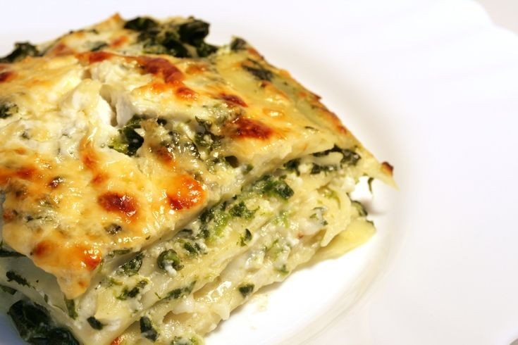

Massas
Lasanha de espinafre e gorgonzola

Ingredientes
- 1 cebola picada
- 2 colheres (sopa) de manteiga
- 3 xícaras de folhas de espinafre cozidas, escorridas e picadas
- 2 colheres (sopa) de farinha de trigo
- 4 xícaras de leite
- 400 g de queijo gorgonzola
- Sal a gosto
- 1 receita de Massa básica de macarrão
- 2 colheres (sopa) de parmesão
Modo de preparo
- Prepare o molho: numa panela, frite a cebola na manteiga até dourar. Junte o espinafre, mexa e cozinhe por cerca de 5 minutos.
- Dissolva a farinha no leite, junte ao espinafre e mexa até obter um creme.
- Acrescente o gorgonzola em pedaços, diminua o fogo e cozinhe, mexendo sempre, até o queijo derreter. Tempere com sal e reserve.
- Prepare a massa da lasanha conforme a ficha Massa básica de macarrão. Abra a massa e corte em tiras de 12 x 20 cm. Leve ao fogo um caldeirão com bastante água fervente com sal. Coloque a lasanha e cozinhe até começar a amolecer.
- Escorra a lasanha, coloque as tiras, lado a lado, sobre um pano de prato e enxugue-as.
- Unte com óleo uma fôrma refratária de 22 x 35 cm e vá fazendo camadas alternadas de lasanha e molho, começando com a lasanha e terminando com o molho. Polvilhe o parmesão, deixe esfriar e congele.
Observação
Você pode montar a lasanha em embalagens de papel-alumínio: assim, não terá as suas travessas ocupadas. Congelamento: embale a fôrma com a lasanha já fria em filme plástico, ou coloque em um saco plástico que feche hermeticamente; etiquete e congele. Descongelamento: retire a lasanha do freezer e descongele na geladeira de um dia para o outro; ou leve ao forno, em banho-maria, coberta com papel-alumínio até descongelar; retire o papel e deixe dourar.